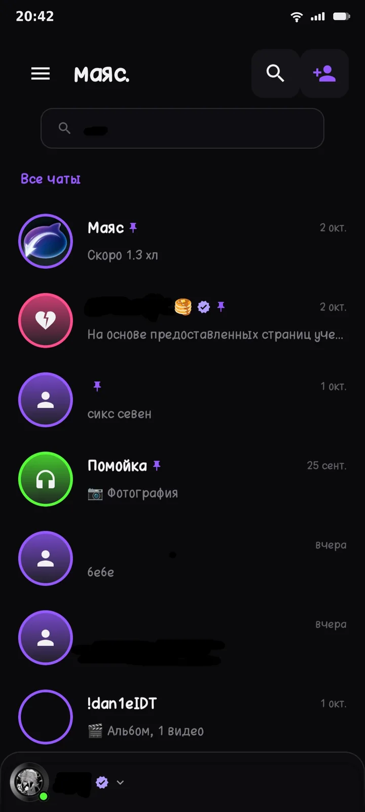
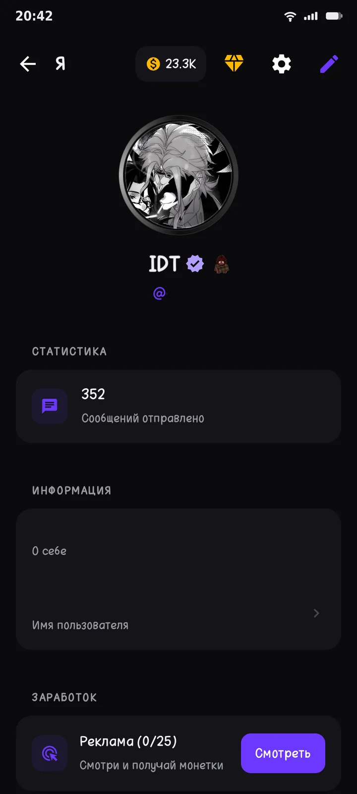
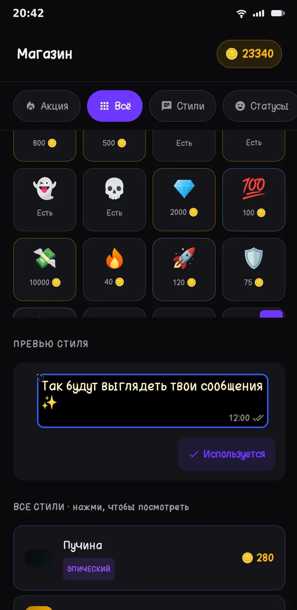
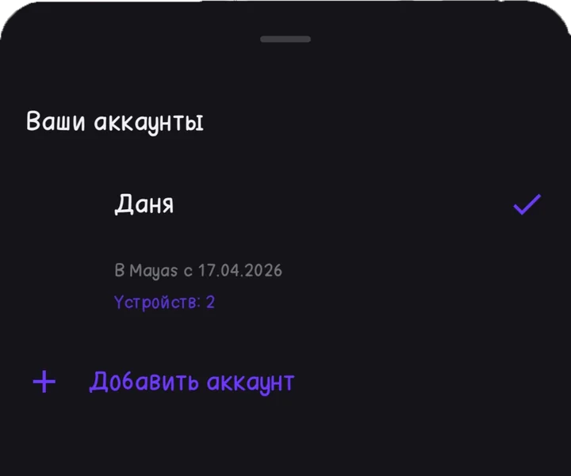
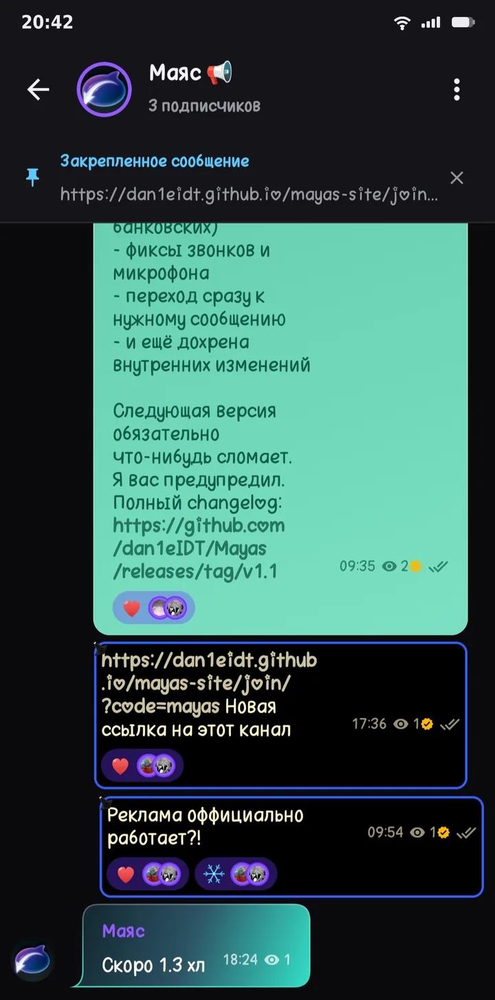
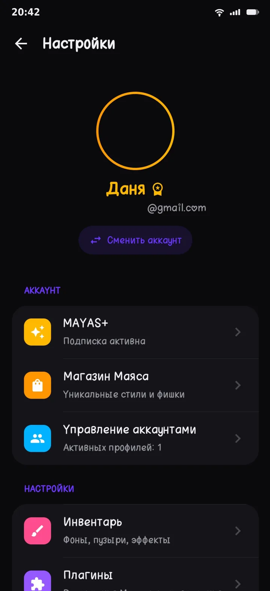
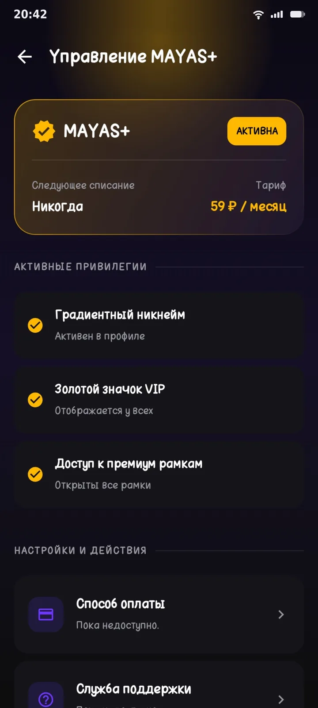
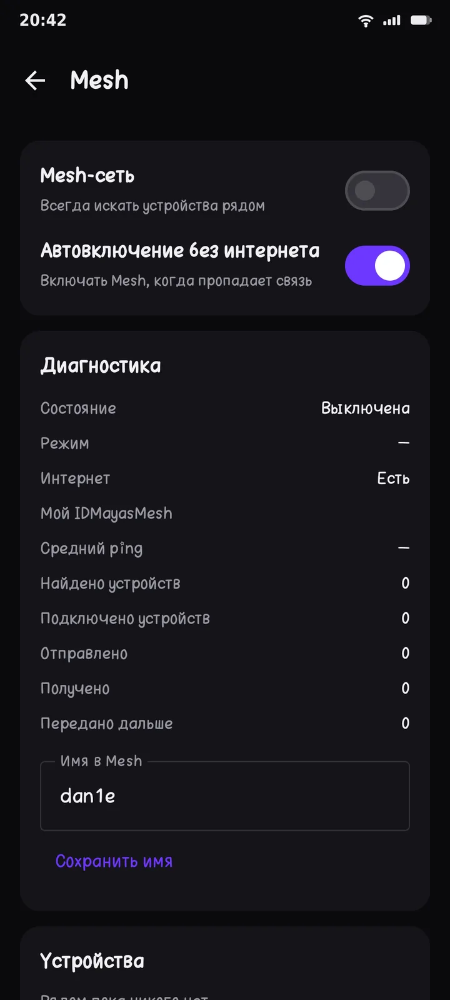
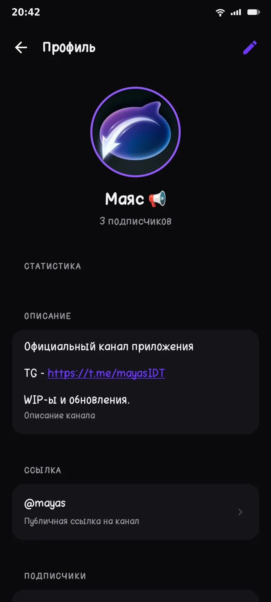
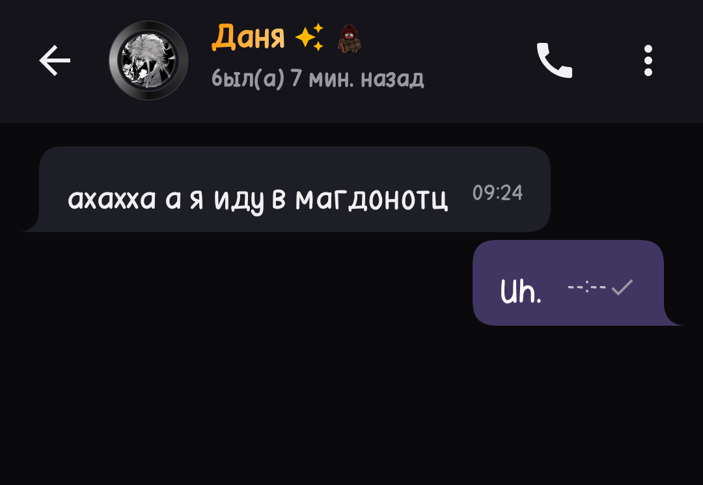

Чаты без лишнего шума
Текст, медиа, реакции и оформление сообщений - всё. я текст забыл

Интерфейс построен вокруг общения (наверное)
Текст, медиа, реакции и оформление сообщений - всё. я текст забыл

Рамки, свечение и статусы позволяют сделать страницу пользователя узнаваемой.

Цены дорогие правда

Нажми на категорию и посмотри, как она выглядит внутри Mayas.
Личные сообщения и групповые беседы.
Голосовая и видеосвязь.
Не хочешь тут кучить чет , м?
Темы, рамки и оформление профиля.
Переключайся между профилями в пару касаний.

Как маяс выглядит изнутри — от чатов до кастомизации профиля.
Нажми на скриншот, чтобы посмотреть крупно





Здесь можно следить за направлениями проекта без обещаний точных дат.
Список подтягивается напрямую из GitHub Releases.
Всё, что стоит знать перед установкой.
Нет. Mayas — самостоятельный независимый проект, разрабатываемый с нуля. Он не связан с Telegram, WhatsApp или другими мессенджерами.
Android — через APK из GitHub Releases, а также веб-версия, которая открывается прямо в браузере без установки.
Приложение бесплатно, исходный код открыт и доступен на GitHub. Подписка MAYAS+ пока в разработке (WIP).
Mayas — молодой независимый проект, публикация в Google Play пока не выполнена. APK устанавливается напрямую и обновляется через GitHub Releases.
Через Issues в репозитории проекта на GitHub — ссылку можно найти в шапке сайта.
Не хочешь устанавливать APK? Веб-версия уже готова и открывается в браузере.
Открыть веб-версию